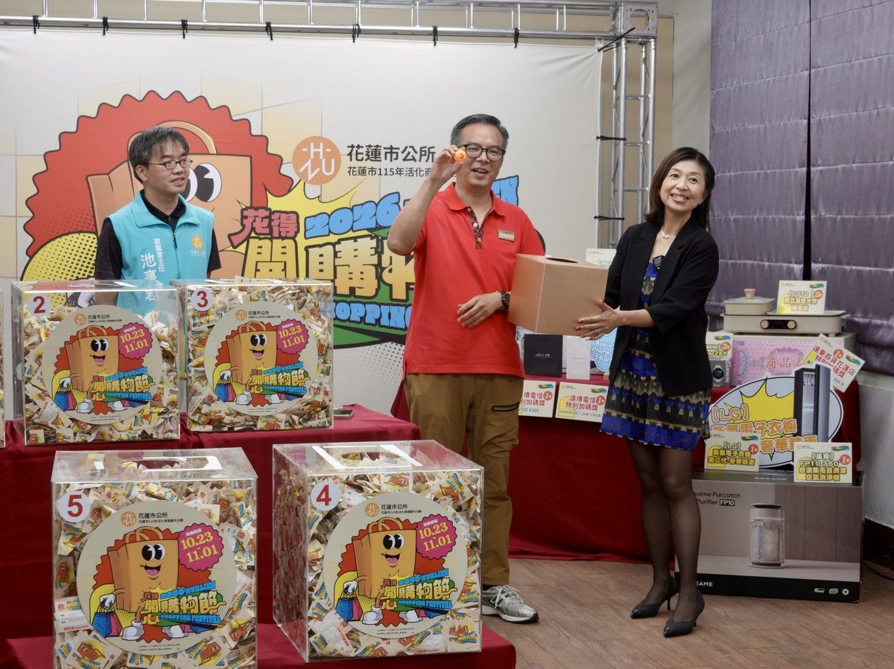

花得開心購物節吸金近4千萬 逾40萬好禮大放送

可樂電子報小編/編輯
花蓮市「花得開心購物節」共發出12萬4千張摸彩券，累計登錄消費金額至少達新臺幣3720萬元。繼10月28日抽出現金及商品禮券後，花蓮市公所4日晚間在進豐生活園區藝能教室的第二階段直播抽獎，除原訂獎項外，市長魏嘉彥當場再加碼兩臺Apple MacBook Neo筆記型電腦，此次購物節送出逾40萬好禮。

魏嘉彥偕同文觀所長宋瑜華出席抽獎活動，由政風室主任池亭君見證。與會來賓包括遠東百貨花蓮店副店長洪偉倫，以及遠傳電信直營門市處業務經理高啟文、花蓮中正門市店長張瑞萍、花蓮中山店長溫玉蓮、花蓮吉安店長廖碧萍。

當晚抽出的頭獎為LG第二代蒸氣電子衣櫥，二獎為蘋果手機，三獎為DREAME空氣清淨機。其他獎品包括全自動義式咖啡機、GPS智慧跑錶、隨行吹風機各2份，玻璃氣炸鍋、開放式耳夾耳機、火烤兩用爐各5份，以及小腿按摩器10份，讓參與購物節的民眾有機會把實用好禮帶回家。

在企業加碼部分，遠百花蓮店副店長洪偉倫表示，遠百花蓮長期深耕在地，積極參與地方活動並支持商圈發展，持續響應花蓮市公所舉辦的「花得開心購物節」，除提供民眾發票兌換摸彩券服務外，更特別加碼贊助價值1萬4000元的遠百商品券。適逢遠百花蓮週年慶熱烈展開，期盼透過購物節與百貨週年慶雙重優惠，吸引更多民眾走入在地商圈、帶動消費人潮，共同促進地方經濟發展。

遠傳電信響應花蓮市公所推動在地消費、振興地方經濟，參與今年「花得開心購物節」，特地攜手VIVO、HONOR等廠商，贊助兩支總價值超過7萬元的高階手機，作為購物節抽獎好禮，期望鼓勵民眾走進花蓮、支持在地店家，進一步帶動消費動能，讓更多人看見花蓮的特色與活力。

魏嘉彥表示，「花得開心購物節」自2020年開辦，今年邁入第七屆，鄉親出門採買、與家人到餐館用餐，或是遊客選購伴手禮，每一筆消費都是對花蓮店家的支持。他感謝遠東百貨、遠傳電信及各贊助廠商響應，也希望大家在購物節結束後，繼續走進花蓮的商圈，光顧自己喜愛的店家，讓支持在地消費成為日常生活的一部分。
文觀所表示，本屆活動以10月1日至11月1日在花蓮市消費的發票參加摸彩，單筆消費每滿300元可換1張，每張發票最多兌換60張。以本屆發出的12萬4000張摸彩券計算，登錄消費金額至少達3720萬元，展現民眾支持在地商家的熱情。
市公所表示，包含第一階段抽出的13萬元現金及商品禮券，本屆購物節送出的獎項總值逾40萬元。即日起將陸續通知得獎者前往指定地點領獎，請得獎者於11月11日下午6點前完成領取。
📸 更多現場紀實影像


▶ 延伸觀看
📺 相關報導影片：點此於 YouTube 觀看完整報導
🌟 掌握花蓮在地第一手資訊・歡迎訂閱追蹤
深度紀實報導、在地精采影音專題，第一時間接收最新消息！